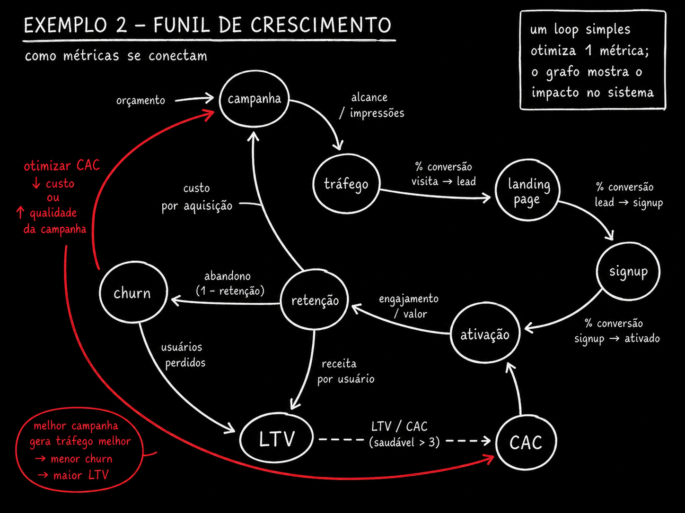

🌱 Model the funnel as a graph
Take the funnel you already have in mind: campaign, traffic, landing page, signup, activation, retention, LTV, churn. Each one becomes a at the — a state the client passes through. Each arrow is the conversion rate between one state and the next: what percentage leave one node and reach the next.
🆕 New here? Four terms before you continue
- CAC (customer acquisition cost): how much you spend, on average, to acquire a new customer — add up what went to the campaign and divide by the customers who came in.
- LTV (lifetime value): how much revenue a customer generates in total while they keep paying.
- Activation: the moment when a new customer uses the product for real for the first time — they didn’t just sign up, they did the thing that proves its value.
- Retention / churn: retention is the share of customers who stay; churn is the opposite — the share who cancel or disappear.
Just writing out this queue of nodes often exposes a problem: someone always realizes they've never measured the rate between two specific stages—usually between "signup" and "activation," where most products lose people without anyone noticing. Naming the node forces you to admit that number doesn't exist.

Key concepts
Stage the customer goes through
Conversion between two states
A stage with no measured rate appears
A funnel is still a pipeline
🔄 Mark the feedback edges
Two edges go back to the beginning of the funnel, and they are what give the system behavior of its own. The first: the customer who cancels (churn) becomes data that changes the campaign — you look at who canceled and adjust who you advertise to. The second: CAC informs the decision about how much budget the campaign gets in the next cycle.
🆕 New here? Feedback
Feedback: when the output of a process influences its own input. In the graph, it’s an edge that leaves from further ahead and loops back to a previous node — the same cycle you saw in Track 1, but now with business metrics at both ends.
🎯 Why this matters
This is the feedback loop that gives the system behavior of its own — and it’s exactly what a short-sighted agent, looking at just one metric (for example, “lower CAC”), doesn’t see. It cuts the campaign budget, CAC drops in the report, and no one notices that the cheaper audience also has higher churn — LTV collapses three months later.
✓ Feedback clearly marked
- ✓"Churn updates the profile of who NOT to advertise to"
- ✓"This month's CAC feeds into next month's budget cap"
- ✓The edge has a label saying WHICH data comes back and WHERE it goes
✗ Feedback ignored
- ✗Design the funnel only as a straight queue, from campaign to LTV
- ✗Optimize CAC without checking what happens to churn/LTV
- ✗Treating each metric as if it were independent of the others
Key concepts
Becomes data for a campaign
Becomes data for a budget
The cycle is what brings the system to life
Only sees what you pointed out
⚖️ Declare the Constraints Between Metrics
"LTV divided by CAC needs to be greater than 3" isn't a metric—it's a relationship between two. You can't write this as a number that goes up or down on its own: it's a comparison that only exists when both nodes are in the same graph, with an edge declaring the rule between them.
A loop with a single objective — "lower CAC," "increase conversions" — can’t even express this constraint, the more you respect it. This is the most concrete argument for modeling a business as a graph: constraints between metrics only make sense when both metrics are visible nodes at the same time, connected by an edge that carries the rule.
What to look at: the dashed line in the middle isn’t a flow edge—it doesn’t represent "the client moves from here to there." It represents a rule that must remain true. The red arrow below shows the classic mistake: CAC dropped (good in an isolated report), but the relationship with LTV broke because no one looked at both together.
📊 Other common business constraints
- Payback period — how long it takes the CAC to pay for itself must be shorter than the available cash runway
- Minimum retention — monthly churn below X% for projected LTV to meet the target
- Margin over CAC — the first-month revenue must cover a fraction of CAC, or cash runs out before LTV is realized
Key concepts
And a relationship between two
It won’t work unless both are visible
Single-metric loop does not express
One number goes up, its counterpart breaks
🌳 Distinguish decomposition, dependency, and blocking
The team backlog has three different types of edges, and most tools only really show one of them. Decomposition: epic contains story contains task. Dependency: it needs to finish first. Block: prevents something else from starting until it’s resolved.
Only the first is a true hierarchy—each task has just one parent, and nothing loops back. The other two turn the tree into a graph: a task can depend on another task from a completely different epic, and a blocker can connect items with no relationship in the backlog's org chart.
🆕 New here? Typed edge
Typed edge: an edge that carries a label saying WHAT TYPE of relationship it represents—it’s not just “A connects to B,” it’s “A depends on B" or "A blocks B". Without the type, the graph becomes a meaningless jumble of lines.

| Edge type | What it means | Effect on parallelism |
|---|---|---|
| Decomposes | An epic contains a story, a story contains a task — hierarchy, with only one parent | None—it’s just organization; it doesn’t constrain execution order |
| Depends on | Needs to finish before the next one starts | Reduces—the dependent task becomes available only afterward |
| Blocks | Prevents another from starting until it is resolved, even when they are not hierarchical | Reduces and hides—it tends to span epics and is the hardest to see |
Key concepts
Decomposes, depends, blocks
Decomposition has a single parent
Span different epics
Tool only draws the hierarchy
📐 Calculate how many workstreams can run now
With dependencies and blockers marked, you can count the level width: how many tasks are ready at the same time, with no pending dependencies. This is how you actually size a team or agents, instead of guessing “I’ll put five agents on this.”
🆕 New here? Level width and bottleneck
- Level breadth: how many tasks are available at the same time on the same “level” of the dependency graph.
- Bottleneck: the point in the system that limits how much the rest can move forward — even when everything around it has spare capacity.
What to look at: the width of each lane. Level 1 opens up two tasks, level 2 opens up three— up to this point, five agents or five people fit well. But level 3 opens up only a. If you put five agents to work and only one task is available at that level, the other four will sit idle or start getting in each other's way.
⚠️ Warning: spare capacity isn’t usable capacity
Having five agents available doesn’t mean five tasks will run in parallel. The dependency graph determines the actual width at any given moment—not the number of people or agents you hired. Measuring the level’s width before of allocating prevents you from placing resources where there’s nothing to do.
Key concepts
Tasks ready at the same time
Better than guessing a number
A narrow level holds everything else up
Extra agents don't fix a bottleneck
🤖 Give the agent the graph to decide
With the business or backlog graph written out, an agent can propose an allocation, identify the bottleneck, and simulate the side effects of a change — "if I double the campaign budget, what happens to churn and LTV?". Without the graph, it only weighs in on the metric you mentioned — and goes back to the myopic loop from the start of the course.
🧪 Ready-to-use prompt: turn a business or backlog into a typed graph
Objective: give Claude Code a description of your funnel or an export of your backlog and get back a JSON graph with typed edges, plus the parallelism levels and the bottleneck.
Voce vai modelar <o funil de crescimento do meu produto> (ou: <o export do meu
backlog em CSV/JSON>) como um grafo. Regras:
1. Cada etapa/tarefa vira um NO com id curto.
2. Para negocio: arestas tipadas em "converte_em" (fluxo normal), "realimenta"
(volta pra um no anterior, ex: churn -> campanha) e "restringe" (relacao
entre duas metricas, ex: LTV/CAC > 3 — nao e fluxo, e regra).
3. Para backlog: arestas tipadas em "decompoe" (hierarquia, um pai so),
"depende_de" (precisa terminar antes) e "bloqueia" (impede inicio,
pode cruzar epicos diferentes).
4. Devolva em JSON: { "nos": [...], "arestas": [{"de","para","tipo"}] }.
5. Calcule e devolva tambem "niveis_paralelismo": lista de niveis com os
nos liberados em cada um (sem dependencia pendente), e "gargalo": o
nivel com menor largura.
Dados de entrada: <cole aqui a descricao do negocio ou o export do backlog>
How to verify: (1) if the JSON has NO "feeds back" (business) or "blocks" (backlog) edges, the model drew a straight pipeline, not a graph—ask again, insisting on loops and cross-connections. (2) Check whether the identified "bottleneck" matches the level the team already feels in practice—if the model points to a bottleneck no one recognizes, the graph probably has an incorrect dependency.
💡 What the graph gives you that a standalone metric does not
A number by itself only answers “did it go up or down.” A graph answers “what else moves when I change this” — and that’s the question that determines real allocation, budget, and priorities. It’s the same argument as in Track 3: the graph isn’t a fad, it’s the right format when the question involves more than one thing at a time.
Key concepts
Allocation, bottleneck, simulation
Only talks about the metric mentioned
Named edges, not just lines
Return to the initial anchor phrase
Quick check (nothing is blocked): You asked the model to draw your growth funnel graph, and it returned just a straight line, from campaign to LTV, with no arrows going back. What should you do?
📌 Module Summary
Next Module:
5.3 — Prompt library: build a graph from a process, turn it into an executable script, audit a graph, find collisions between loops.